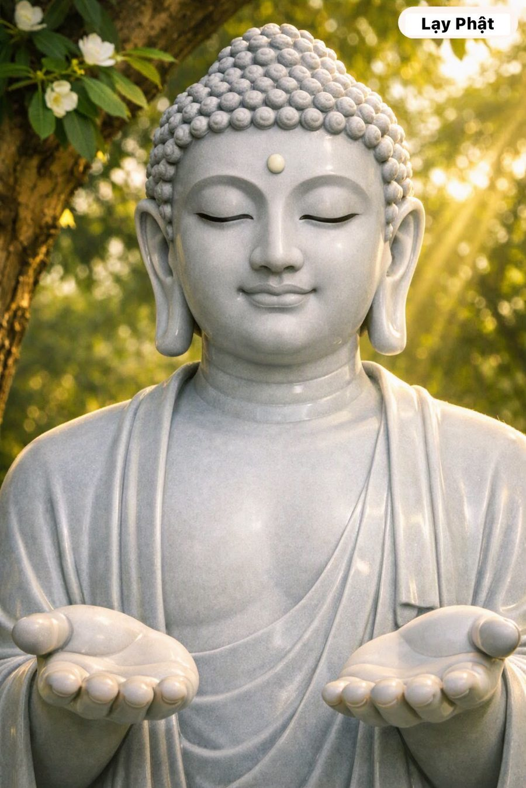

🌸 KHỔ ĐAU VÀ CON ĐƯỜNG ĐỂ DIỆT TRỪ KHỔ 🌸
🌿 Tại tịnh xá, Đức Phật ôn tồn nhìn chư Tăng rồi đặt một câu hỏi: "Này các Tỳ-kheo, vị bác sĩ giỏi là vị bác sĩ thế nào?".
Một đệ tử liền chắp tay bạch: "Bạch Đức Thế Tôn, là người biết rõ bệnh, biết nguyên nhân gây bệnh, biết phương thuốc chữa và biết bệnh đã chữa khỏi hẳn".
Đức Phật gật đầu khen ngợi: "Đúng vậy. Như Lai cũng như thế: Biết rõ Khổ, biết Nguyên nhân của khổ, biết Sự chấm dứt khổ và chỉ ra Con đường dẫn đến hết khổ".
Lời so sánh giản dị mà sâu sắc ấy đã giúp các đệ tử thấu hiểu sứ mệnh cứu độ chúng sinh cao cả của bậc Đạo sư.
🌿 Ví như vị Y vương đại tài, Đức Phật không chỉ chẩn đoán căn bệnh khổ đau phiền não của kiếp người mà còn chỉ dạy phương thuốc điều trị triệt để.
Tứ Diệu Đế giúp chỉ rõ thực trạng Khổ đau, vạch ra Nguyên nhân khổ do tham sân si và chỉ dạy Con đường thực hành Bát Chánh Đạo để diệt khổ.
Mọi nỗi đau trong cuộc đời đều có thể được chữa lành nhờ ánh sáng trí tuệ của việc thực hành Bát Chánh Đạo.
🌿 Mỗi chúng ta hãy chủ động làm vị bác sĩ cho chính tâm trí mình. Thay vì trốn chạy hay oán trách nghịch cảnh, hãy dũng cảm quay về nhận diện Tứ Diệu Đế và kiên trì thực hành Bát Chánh Đạo qua từng suy nghĩ, lời nói, hành động.
Việc siêng năng tu tập Chánh kiến, Chánh niệm và Chánh định mỗi ngày sẽ giúp ta loại bỏ gốc rễ mầm mống của khổ đau, nuôi dưỡng sự bình an nội tại và tiến tới giác ngộ giải thoát trọn vẹn!
❤️ Trang Lạy Phật: Lan tỏa Từ Bi - Sống đời Tỉnh Thức ❤️